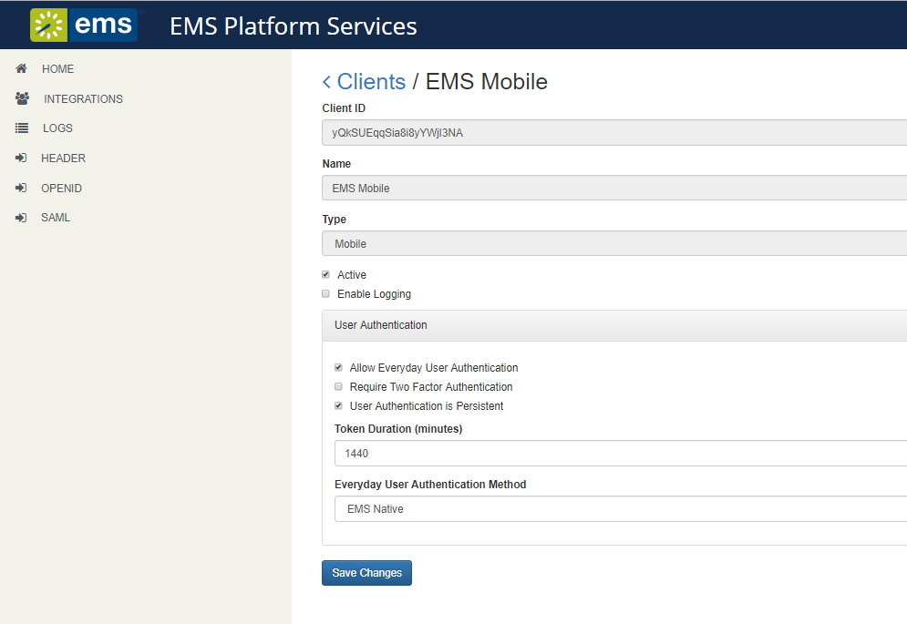

This topic provides instructions on how to do the following:
See Also: System Requirements
Download the EMSPlatformServices.msi file and run on your web server.
You will need to enter the SQL server and EMS database, configured to allow external connections. Make a note of the database name. The typical install path is C:\Inetpub\wwwroot.
When all prompts have been completed, click Install. The API is now installed on your web server.
You will also need a Virtual Directory Name (typical default is EMSPlatformServices). Make a note of the new site you have created.
Access URL for
Log in using your credentials depending on your authentication type. Please refer to configuring Platform Services in the Admin Portal for more details.
Click on the Integrations tab in the sidebar and select EMS Mobile.

Select authentication method for everyday users.
In addition to the authentications above, EMS Mobile App supports Two-Factor Authentication and Persistent Authentication.
Click the "User authentication is persistent" box to allow the user to remain logged into the
Install the
If your organization has EMS Everyday Users licensing, no additional license for
Download the installation files from the Downloads area of Accruent Access.
Ensure that EMS Platform Services is installed and connected to your organization's web server.
Configure user authentication.
Once these components are in place, users at your organization can add EMS Mobile App to their mobile devices (as a private or public deployment) and enter your server URL and (optional) credentials to authenticate.
See Also: Assign Templates to EMS Mobile App Users.